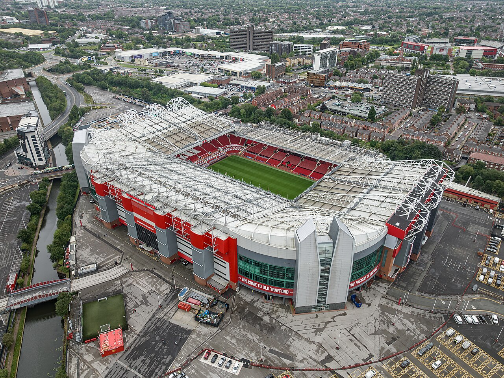
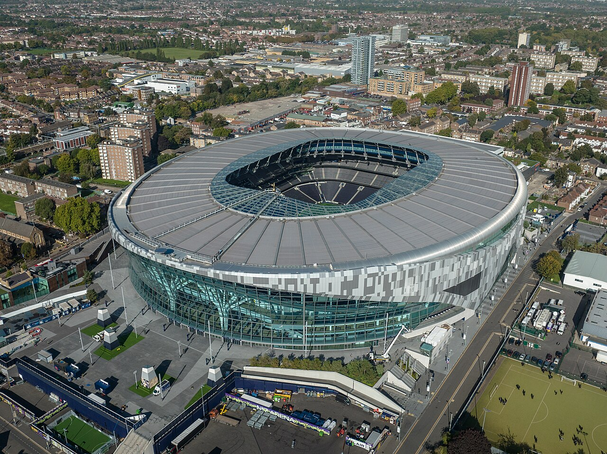
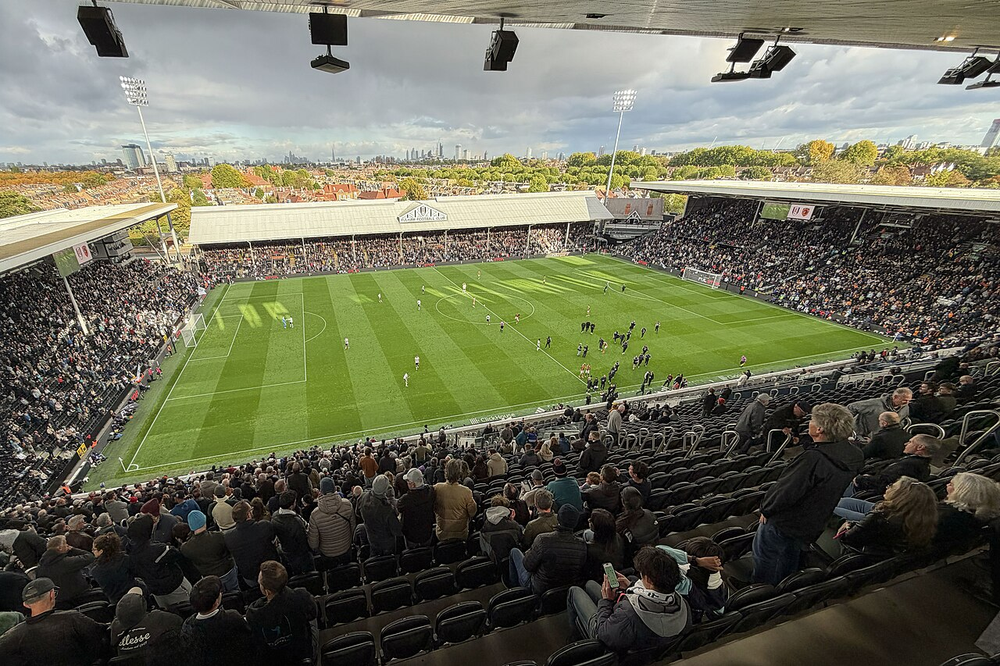
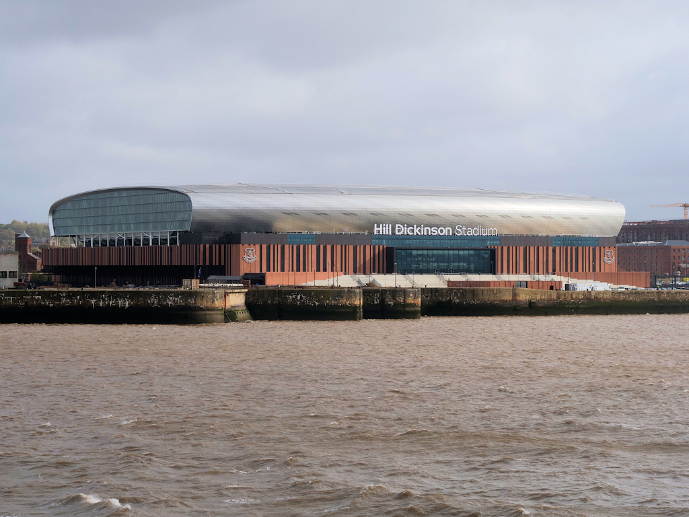

Old Trafford
The biggest club ground in the country and United's home since 1910.
2026-27 season
From a 12,000-seat ground on the south coast to a 74,000-seat giant in Manchester, every Premier League club plays somewhere with its own history. This guide covers all twenty.
Browse the grounds

The biggest club ground in the country and United's home since 1910.

A riverside ground with a real cottage in one corner and a stand from 1905.

The newest ground in the league, built on a former dock on the River Mersey.